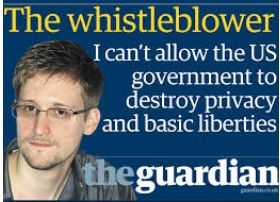

Edward Joseph Snowden (born June 21, 1983) is a former computer intelligence consultant who leaked highly classified information from the National Security Agency (NSA) in 2013 when he was an employee and subcontractor for the Central Intelligence Agency (CIA). His disclosures revealed numerous global surveillance programs, many run by the NSA and the Five Eyes Intelligence Alliance. He released top secret NSA documents proving the United States Government was monitoring phone calls, emails, webcams of its own citizens. His job at the NSA allowed him access to them. He has said, "I do not want to live in a world where anything I do or say is recorded."
On June 21, 2013, the United States Department of Justice unsealed charges against Snowden of two counts of violating the Espionage Act of 1917 and theft of government property, following which the Department of State revoked his passport. In October 2020, he was granted permanent residency in Russia. His disclosures have fueled debates over mass surveillance, government secrecy, and the balance between national security and information privacy.In early 2016, Snowden became the president of the Freedom of the Press Foundation, a San Francisco-based nonprofit organization that aims to protect journalists from hacking and government surveillance. In 2013 Snowden was voted Person of the Year by The Guardian. In September 2019 Snowden released the memoir Permanent Record.